Every edition, kept. Three a day — Morning ~6:00 AM · Midday ~12:30 PM · Evening ~5:30 PM PT — plus any out-of-cycle banner updates, stamped with their time. Reader counts (👁) tally from Nov 15, 2026, when the counter went live; earlier editions start at zero.
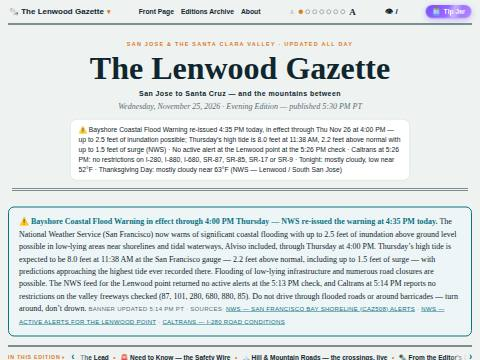
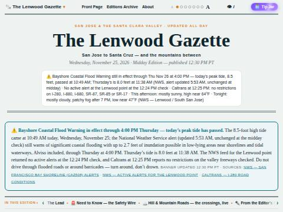
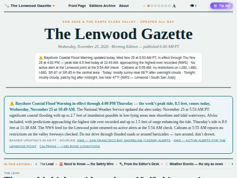
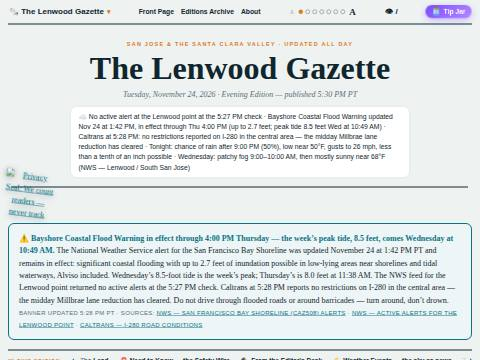
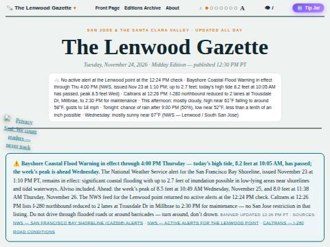
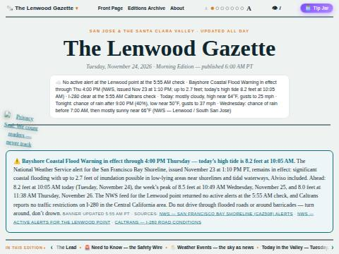
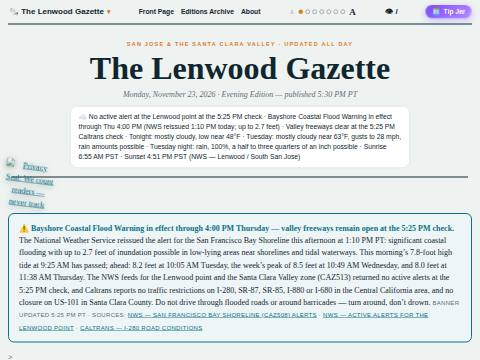
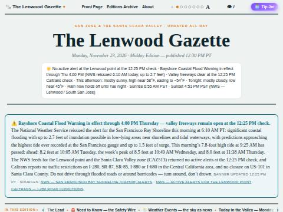
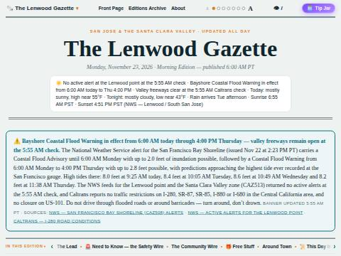
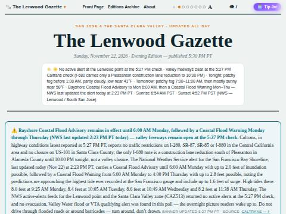
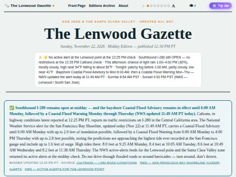
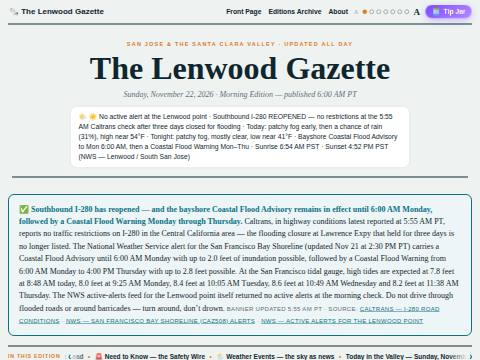
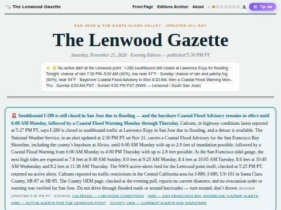
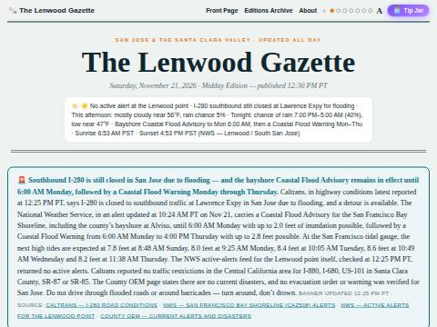
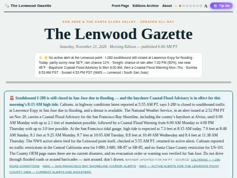
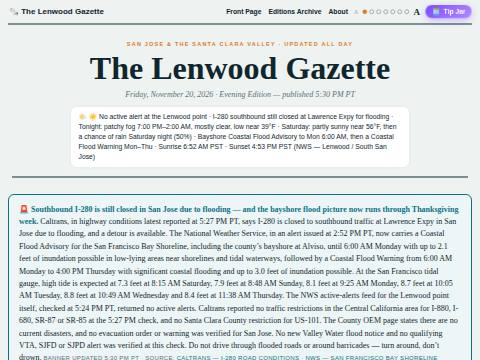
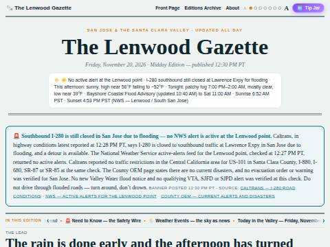
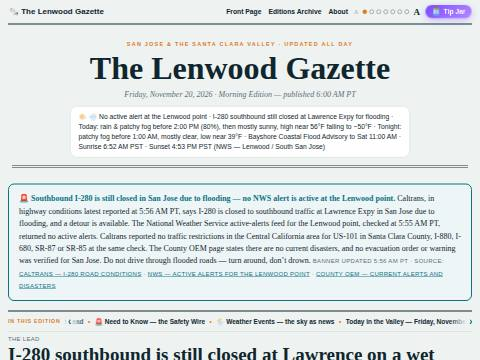
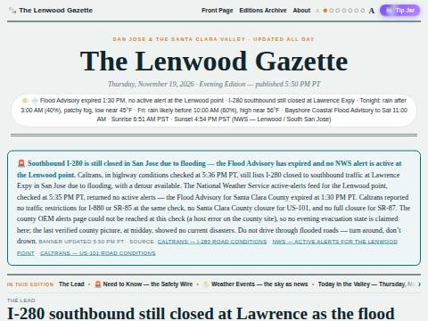
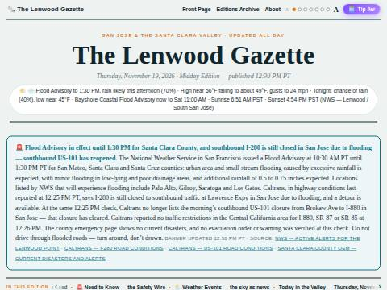
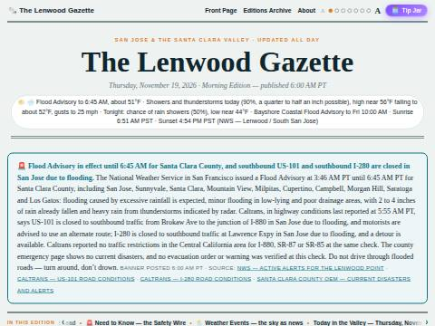
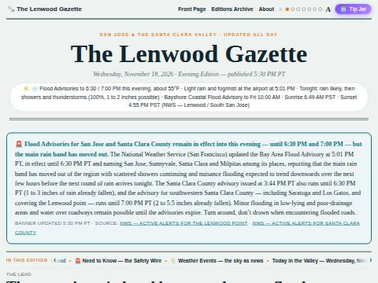
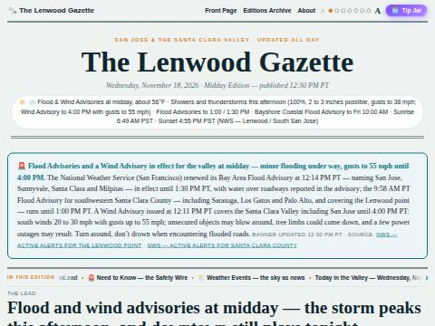
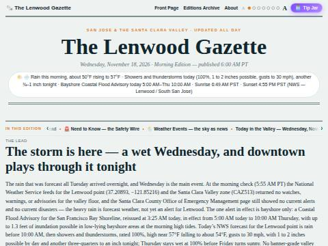
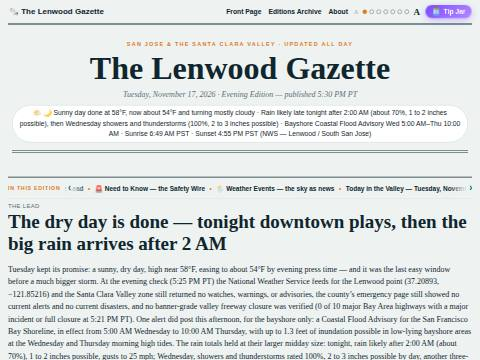
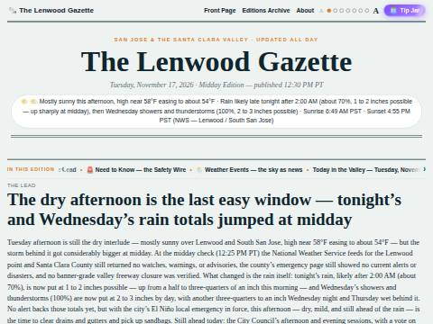
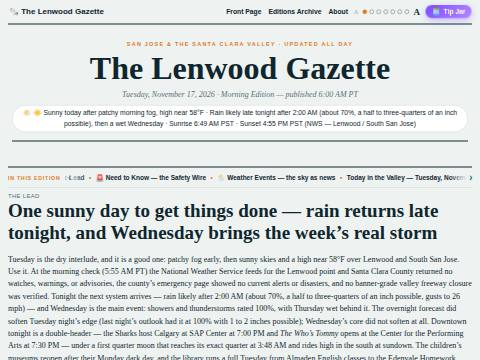
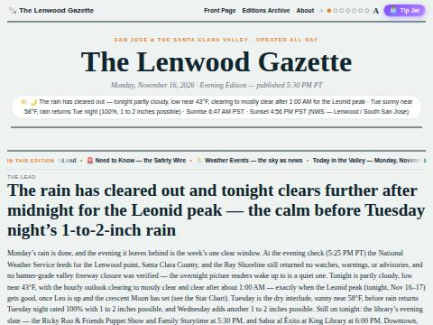
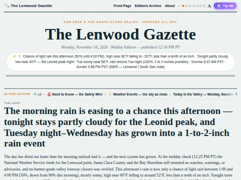
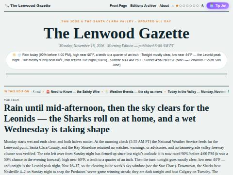
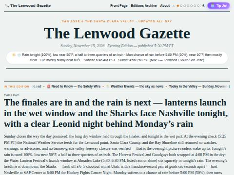
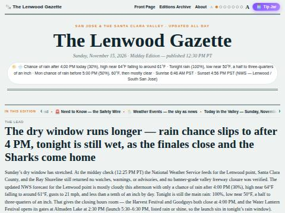
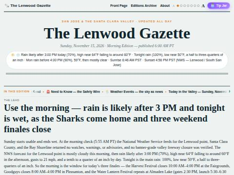
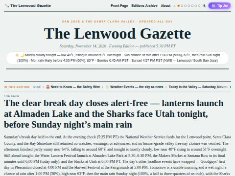
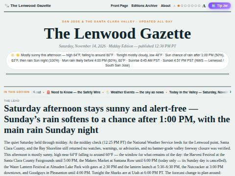
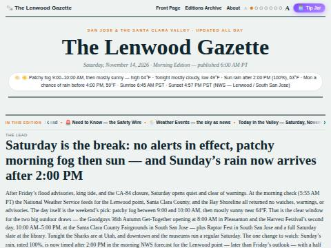
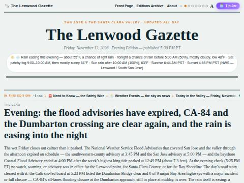
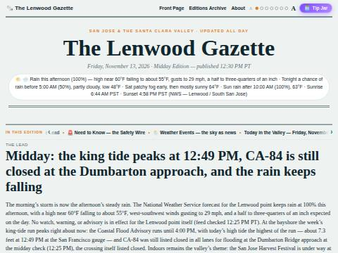
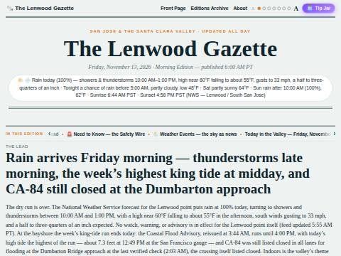
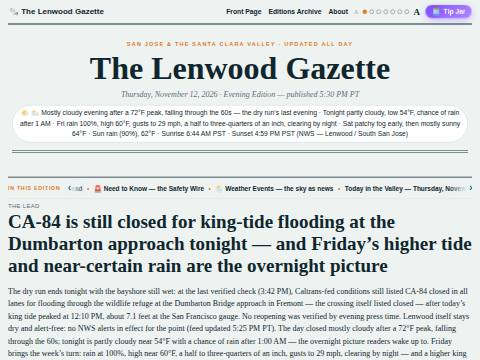
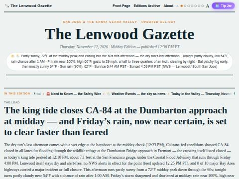
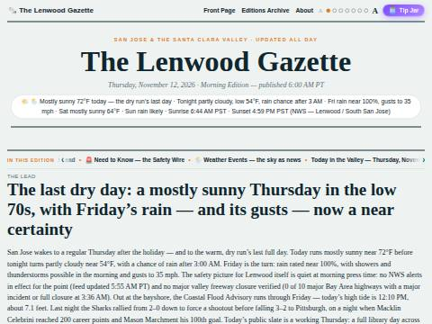
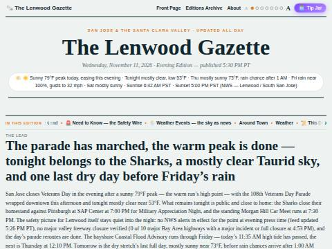
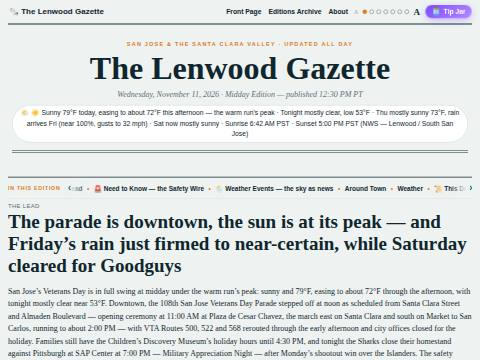
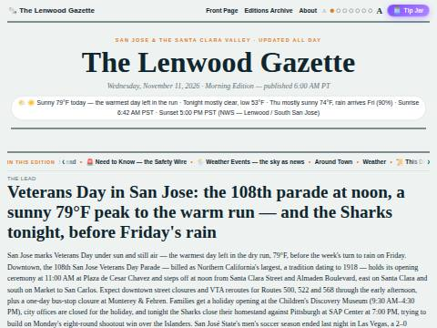
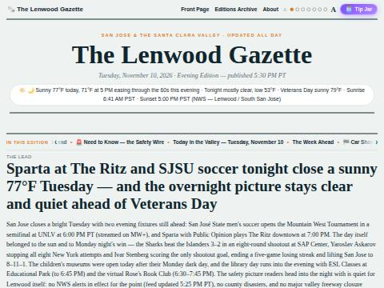
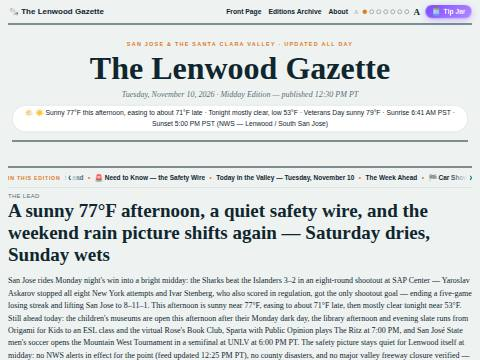
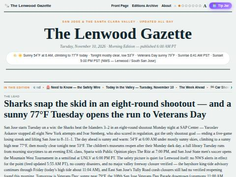
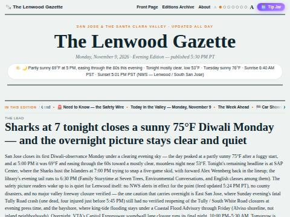
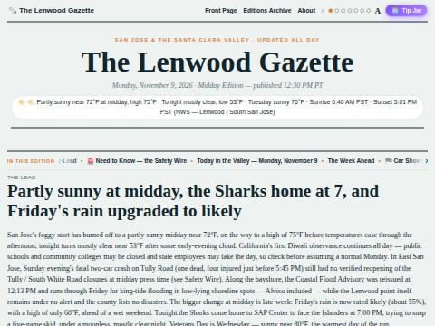